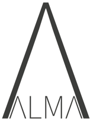
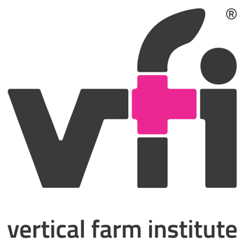
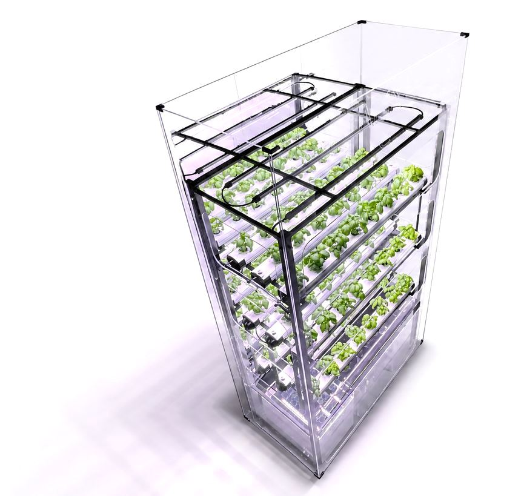

ALINA · Bürgeralm, 1.500 m · Nursery ALINA NURSE 69
Monitoring seit Inbetriebnahme
Der pH lag seit dem Ende der Befüllung zu jeder Stunde im Zielbereich 5,5–6,5. Die Raumluft wird dagegen kälter: Beim Lüften stürzt sie regelmäßig ab, zuletzt bis auf .

Lufttemperatur nach Tageszeit seit 22.10.: Linie = Mittelwert, Punkte = tiefster Stundenwert. Die Einbrüche häufen sich morgens um 7–8 Uhr und am späten Nachmittag bis in die Nacht.
Aus den Messdaten abgeleitet. EC-Sprung: EC fällt um mindestens 0,08 mS/cm in einer Stunde, während der pH steigt.
| Zeitpunkt | Ereignis | Detail |
|---|